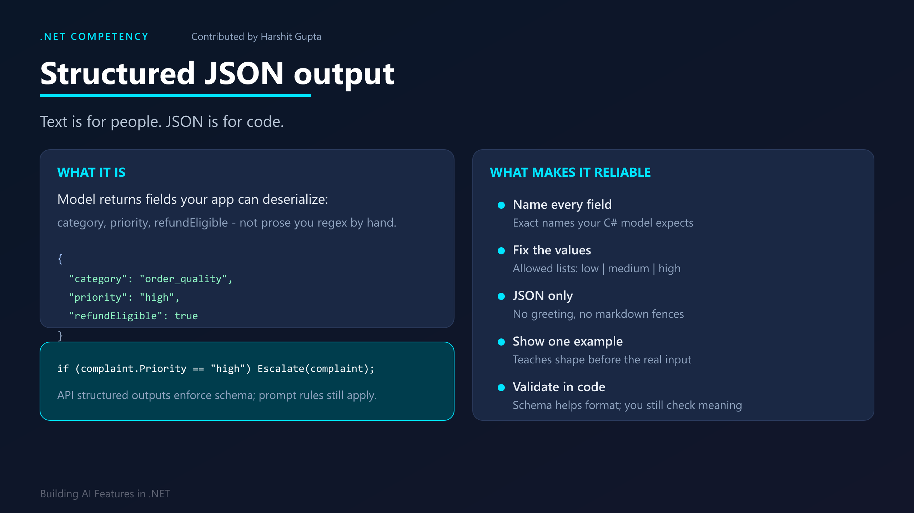
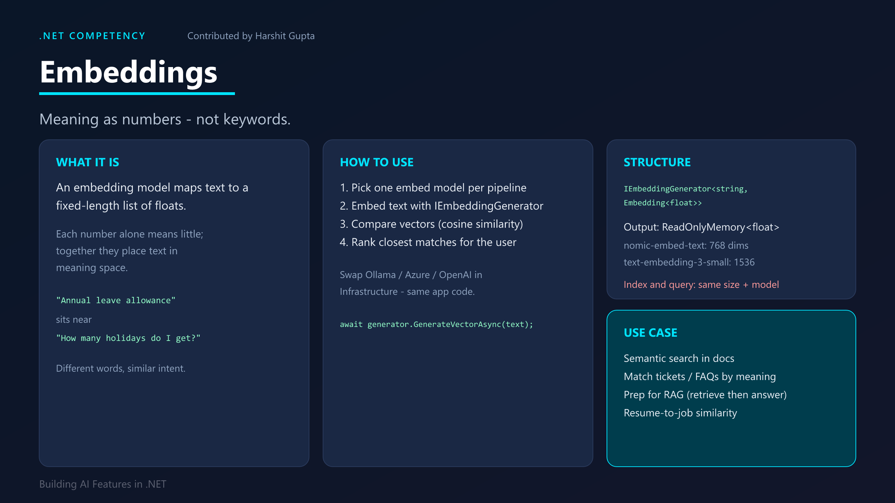
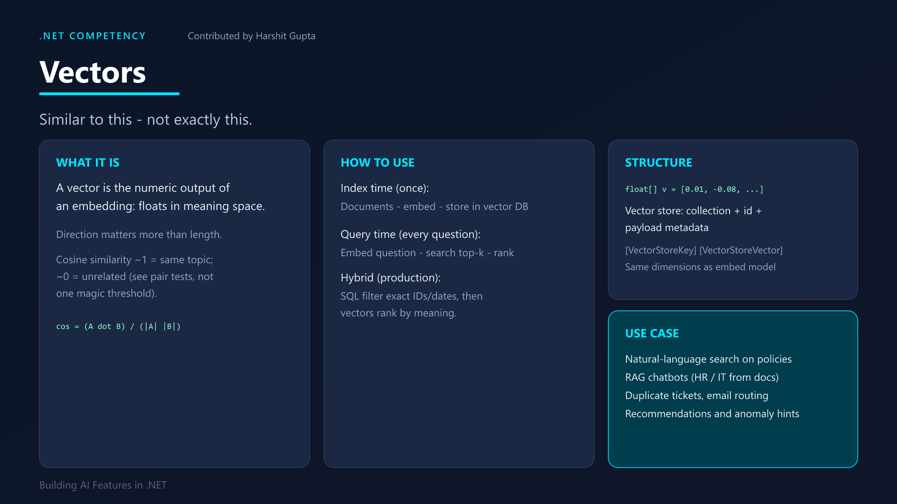

IChatClient, structured output, and embeddings: one Microsoft.Extensions.AI interface whether you run Ollama locally or Azure OpenAI in production.
On this page
- Structured output
- Why one interface (IChatClient)
- Embeddings
- Vectors and use cases
- Sample solution
- Key takeaways
Structured output
Text is for people; JSON is for code. A customer might write: “My biryani arrived cold and the raita was missing.” The model can reply in friendly prose — a person understands it, but your service cannot reliably read category or priority from that text.

Instead, ask for JSON your code can deserialize:
Example response
{
"category": "order_quality",
"priority": "high",
"refundEligible": true
}if (complaint.Priority == "high") Escalate(complaint);Example: classify a complaint
Prompt to paste
Classify this customer complaint.
Reply with JSON only, no other text, using exactly these fields:
- category: "food_quality", "missing_item", "delivery_delay" or "other"
- priority: "low", "medium" or "high"
- refund_eligible: true or false
Complaint: "My biryani arrived cold and the raita was missing."Expected answer: category: food_quality, priority: high, refund_eligible: true. Then change the complaint, remove format rules, or paste the same prompt into Claude and compare.
What makes the JSON reliable
| Practice | Why |
|---|---|
| Name every field | Use the exact names your C# types expect — e.g. category, priority. |
| Fix the values | Allowed lists instead of free text: low | medium | high. |
| Say “JSON only” | No greeting, no explanation, no markdown fences. |
| Show an example | One sample input/output teaches the shape. |
| Validate in code | Format can be right and the answer still wrong. Deserialize, then validate (FluentValidation, business rules). APIs can enforce a JSON schema (structured outputs); prompt rules still apply. |
Use cases: classify support tickets and emails, extract fields from invoices and resumes, turn natural language into form fields, pass data between steps of an AI workflow. See also Controlling the output.
Why one interface (IChatClient)
Your .NET app talks to IChatClient (Microsoft.Extensions.AI). You plug in Ollama, OpenAI, Azure OpenAI, or other providers at startup — the same idea as ILogger: code against one interface, swap implementation in DI.
Without an abstraction, each vendor has different endpoints, response shapes, and parameter names. Switching models means rewriting integration code.
| Provider | Endpoint | Answer path | Max length param |
|---|---|---|---|
| Ollama | POST /api/chat | message.content | options.num_predict |
| OpenAI | POST /v1/chat/completions | choices[0].message.content | max_completion_tokens |
| Anthropic | POST /v1/messages | content[0].text | max_tokens (required) |
Switch providers by changing one line
Ollama (local)
IChatClient client =
new OllamaApiClient(
new Uri(ollamaUrl),
"llama3.2");Azure OpenAI
IChatClient client =
new AzureOpenAIClient(new Uri(endpoint), credential)
.GetChatClient("gpt-4o-mini")
.AsIChatClient();OpenAI
IChatClient client =
new OpenAIClient(apiKey)
.GetChatClient("gpt-4o-mini")
.AsIChatClient();Everything after client creation stays the same: messages, options, and every GetResponseAsync / streaming call.
Embeddings
An embedding model turns text into a fixed list of numbers — e.g. “How many holidays do I get?” becomes hundreds of floats. Each number alone means little; together they place the text in a meaning space. Similar questions (annual leave, vacation days) sit close together even with different words.

Cosine similarity
Similarity measures the angle between two vectors, not their length. Same direction ≈ same meaning. Values near 1 = very similar; near 0 = unrelated. Compare scores relative to each other — not against one fixed threshold.
Formula (illustrative C#)
dot += a[i] * b[i];
magA += a[i] * a[i];
magB += b[i] * b[i];
return dot / (Math.Sqrt(magA) * Math.Sqrt(magB));| Pair | Expected |
|---|---|
| “How many holidays do I get?” vs “What is the annual leave allowance?” | High |
| “How many holidays do I get?” vs “How do I reset my laptop password?” | Low |
| “I enjoy writing C# code” vs “Programming in .NET is fun” | High |
| “The bank approved my loan” vs “I sat on the river bank” | Low — shared word, different meaning |
IEmbeddingGenerator (same pattern as chat)
Generate a vector
IEmbeddingGenerator<string, Embedding<float>> generator =
new OllamaApiClient(
new Uri("http://localhost:11434"),
"nomic-embed-text");
ReadOnlyMemory<float> vector =
await generator.GenerateVectorAsync("Dependency injection in .NET");
Console.WriteLine(vector.Length); // 768 with nomic-embed-textSwap providers in Infrastructure: .GetEmbeddingClient("text-embedding-3-small").AsIEmbeddingGenerator(). Similarity, search, and RAG code stay the same. Vector size depends on the model — nomic-embed-text: 768; text-embedding-3-small: 1536. The vector store must use the same size and model for index and query.
Vectors and use cases
A vector is the numeric output you store and search. Use it anywhere you need “similar to this”:

- Semantic search — “Can I carry forward my holidays?” finds the leave policy.
- RAG chatbots — HR or IT helpdesk answers from company documents.
- Recommendations — courses, articles, resumes matched to jobs.
- Duplicate detection — support tickets describing the same bug in different words.
- Classification — route email to billing or technical without training a custom model.
- Anomaly detection — transaction patterns unlike a customer’s usual behaviour.
Vectors or SQL?
| Use vectors | Use SQL |
|---|---|
| “What’s similar to this?” — natural-language questions, related documents or tickets, recommendations, theme grouping. | “What exactly matches this?” — order, account, or employee ID lookups; transactions over a threshold; small fixed lists with clear keywords. |
Production systems often use hybrid search: filter with SQL for exact conditions, then rank by vector similarity.
Sample solution: AiBuildingBlocks
AiBuildingBlocks.sln
├── Application (interfaces, models, use cases)
├── Infrastructure (IChatClient, IEmbeddingGenerator)
└── ConsoleApp (DI, logging, demos)Application references no AI package. Swapping Ollama for Azure OpenAI only touches Infrastructure.
Run locally
ollama pull llama3.2
ollama pull nomic-embed-text
dotnet run| Walkthrough | What it shows |
|---|---|
| IChatClient | Token counts and a streamed answer |
| Embeddings | 768-dimensional vectors; similarity scores by meaning |
Key takeaways
- IChatClient — write once; switch providers by changing one line.
- Structured output — name fields, fix values, JSON only, then validate.
- Embeddings — meaning as numbers; cosine similarity compares direction.
- Vectors vs SQL — similar vs exact; hybrid in real systems.
Internal use only.